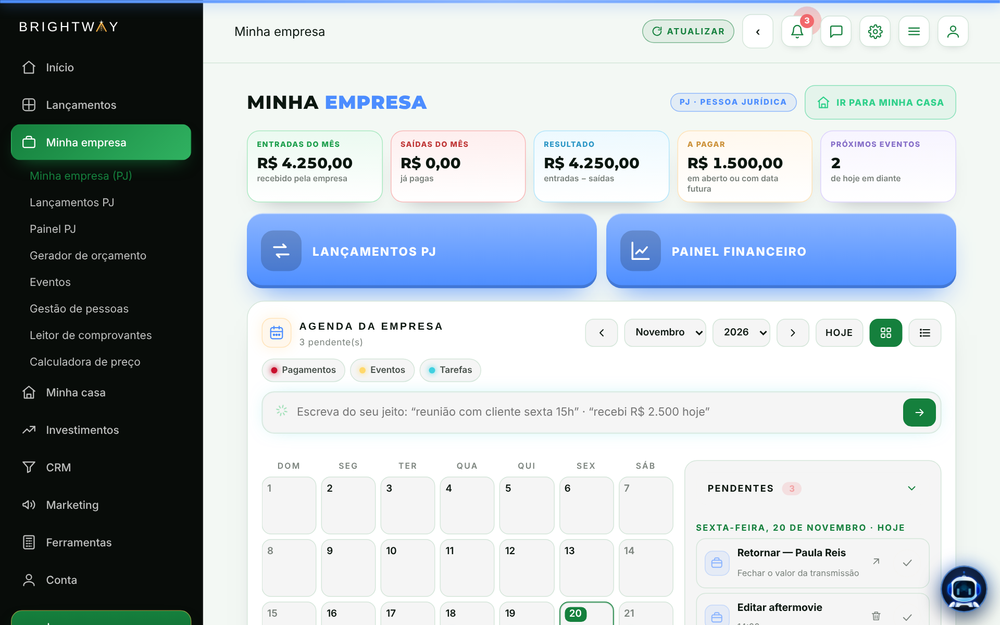

A engrenagem do topo (ou CONFIGURAÇÕES, no menu) abre os seus dados e a aparência da plataforma. Você troca o modo com um toque e a tela muda na hora.
Nome, e-mail, como você entra e desde quando. Em Como te chamo? escreva o nome que o Tio Cláudio usa. Atalhos: minha conta, baixar meus dados, manual e app.
Os modos com o selo ANIMADO têm luzes em movimento; a chave Animações dos modos desliga os efeitos e mantém as cores.
Toque em 📎 LER A LOGO OU O MANUAL DA MARCA e escolha uma imagem: o app lê as cores no próprio aparelho. Ajuste fundo, estilo (liso ou vidro com luz) e animação, toque em VER COMO FICA e depois em SALVAR.

A escolha fica guardada no aparelho: o celular pode usar um modo e o computador outro, e cada usuário escolhe o seu. Nos editores de foto e vídeo o miolo continua escuro, para você ver a cor certa da mídia.